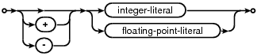

expr:

literal-value:

signed-number:
raise-function:

This section is different from the others. Most other sections of this document talks about a particular SQL command. This section does not talk about a standalone command but about "expressions" which are subcomponents of most other commands.
Operators
SQLite understands the following binary operators, in order from highest to lowest precedence:
|| * / % + - << >> & | < <= > >= = == != <> IS IN LIKE GLOB MATCH REGEXP AND OR
Supported unary prefix operators are these:
- + ~ NOT
The COLLATE operator can be thought of as a unary postfix operator. The COLLATE operator has the highest precedence. It always binds more tightly than any prefix unary operator or any binary operator.
The unary operator + is a no-op. It can be applied to strings, numbers, or blobs and it always gives as its result the value of the operand.
Note that there are two variations of the equals and not equals operators. Equals can be either = or ==. The non-equals operator can be either != or <>. The || operator is "concatenate" - it joins together the two strings of its operands. The operator % outputs the remainder of its left operand modulo its right operand.
The result of any binary operator is a numeric value, except for the || concatenation operator which gives a string result.
The IS and IS NOT operators work like = and != except that NULL values compare equal to one another. IS and IS NOT have the same precedence as =.
Literal Values
A literal value is a constant of some kind. Literal values may be integers, floating point numbers, strings, BLOBs, or NULLs. Scientific notation is supported for floating point literal values. The "." character is always used as the decimal point even if the locale setting specifies "," for this role - the use of "," for the decimal point would result in syntactic ambiguity. A string constant is formed by enclosing the string in single quotes ('). A single quote within the string can be encoded by putting two single quotes in a row - as in Pascal. C-style escapes using the backslash character are not supported because they are not standard SQL. BLOB literals are string literals containing hexadecimal data and preceded by a single "x" or "X" character. For example:
X'53514C697465'
A literal value can also be the token "NULL".
Parameters
A "variable" or "parameter" token specifies a placeholder in the expression for a literal value that is filled in at runtime using the sqlite3_bind() family of C/C++ interfaces. Parameters can take several forms:
| ?NNN | A question mark followed by a number NNN holds a spot for the NNN-th parameter. NNN must be between 1 and SQLITE_MAX_VARIABLE_NUMBER. | |
| ? | A question mark that is not followed by a number holds a spot for the next unused parameter. | |
| :AAAA | A colon followed by an identifier name holds a spot for a named parameter with the name AAAA. Named parameters are also numbered. The number assigned is the next unused number. To avoid confusion, it is best to avoid mixing named and numbered parameters. | |
| @AAAA | An "at" sign works exactly like a colon. | |
| $AAAA | A dollar-sign followed by an identifier name also holds a spot for a named parameter with the name AAAA. The identifier name in this case can include one or more occurances of "::" and a suffix enclosed in "(...)" containing any text at all. This syntax is the form of a variable name in the Tcl programming language. The presence of this syntax results from the fact that SQLite is really a Tcl extension that has escaped into the wild. |
Parameters that are not assigned values using sqlite3_bind() are treated as NULL.
The LIKE and GLOB operators
The LIKE operator does a pattern matching comparison. The operand to the right of the LIKE operator contains the pattern and the left hand operand contains the string to match against the pattern. A percent symbol ("%") in the LIKE pattern matches any sequence of zero or more characters in the string. An underscore ("_") in the LIKE pattern matches any single character in the string. Any other character matches itself or its lower/upper case equivalent (i.e. case-insensitive matching). (A bug: SQLite only understands upper/lower case for ASCII characters by default. The LIKE operator is case sensitive by default for unicode characters that are beyond the ASCII range. For example, the expression 'a' LIKE 'A' is TRUE but 'æ' LIKE 'Æ' is FALSE.)
If the optional ESCAPE clause is present, then the expression following the ESCAPE keyword must evaluate to a string consisting of a single character. This character may be used in the LIKE pattern to include literal percent or underscore characters. The escape character followed by a percent symbol (%), underscore (_), or a second instance of the escape character itself matches a literal percent symbol, underscore, or a single escape character, respectively.
The infix LIKE operator is implemented by calling the application-defined SQL functions like(Y,X) or like(Y,X,Z).
The LIKE operator can be made case sensitive using the case_sensitive_like pragma.
The GLOB operator is similar to LIKE but uses the Unix file globbing syntax for its wildcards. Also, GLOB is case sensitive, unlike LIKE. Both GLOB and LIKE may be preceded by the NOT keyword to invert the sense of the test. The infix GLOB operator is implemented by calling the function glob(Y,X) and can be modified by overriding that function.
The REGEXP operator is a special syntax for the regexp() user function. No regexp() user function is defined by default and so use of the REGEXP operator will normally result in an error message. If a application-defined SQL function named "regexp" is added at run-time, that function will be called in order to implement the REGEXP operator.
The MATCH operator is a special syntax for the match() application-defined function. The default match() function implementation raises an exception and is not really useful for anything. But extensions can override the match() function with more helpful logic.
The BETWEEN operator
The BETWEEN operator is logically equivalent to a pair of comparisons. "x BETWEEN y AND z" is equivalent to "x>=y AND x<=z" except that with BETWEEN, the x expression is only evaluated once. The precedence of the BETWEEN operator is the same as the precedence as operators == and != and LIKE and groups left to right.
The CASE expression
A CASE expression serves a role similar to IF-THEN-ELSE in other programming languages. WHEN expressions are evaluated from left to right until one is found that is true, at which point the corresponding THEN term becomes the result. If no WHEN expression is true then the ELSE clause determines the result or the result is NULL if there is no ELSE clase.
The optional expression that occurs in between the CASE keyword and the first WHEN keyword is the "base" expression. There are two basic forms of a CASE expression: those with and without a base expression. In a CASE without a base expression, each WHEN expression is evaluted as a boolean and the overall result is determined by first WHEN expression that is true. In a CASE with a base expression, the base expression is evaluted just once and the result is compared against each WHEN expression until a match is found. When comparing a base expression against a WHEN expression, the same collating sequence, affinity, and NULL-handling rules apply as if the base expression and WHEN expression are respectively the left- and right-hand operands of an = operator.
Assuming the subexpressions have no side-effects, the following two expressions are equivalent:
- CASE x WHEN w1 THEN r1 WHEN w2 THEN r2 ELSE r3 END
- CASE WHEN x=w1 THEN r1 WHEN x=w2 THEN r2 ELSE r3 END
The only difference between the two CASE expressions shown above is that the x expression is evaluated exactly once in the first example but might be evaluated multiple times in the second.
A NULL result is considered false when evaluating WHEN terms. If the base expression is NULL then the result of the CASE is the result of the ELSE expression if it exists, or NULL if the ELSE clause is omitted.
Table Column Names
A column name can be any of the names defined in the CREATE TABLE statement or one of the following special identifiers: "ROWID", "OID", or "_ROWID_". These special identifiers all describe the unique integer key (the rowid) associated with every row of every table. The special identifiers only refer to the row key if the CREATE TABLE statement does not define a real column with the same name. The rowid can be used anywhere a regular column can be used.
Subqueries
SELECT statements can appear in expressions as either the right-hand operand of the IN operator, as a scalar quantity, or as the operand of an EXISTS operator. As a scalar quantity or the operand of an IN operator, the SELECT should have only a single column in its result. Compound SELECTs (connected with keywords like UNION or EXCEPT) are allowed. With the EXISTS operator, the columns in the result set of the SELECT are ignored and the expression returns TRUE if one or more rows exist and FALSE if the result set is empty. If no terms in the SELECT expression refer to values in the containing query, then the expression is evaluated once prior to any other processing and the result is reused as necessary. If the SELECT expression does contain variables from the outer query, then the SELECT is reevaluated every time it is needed.
When a SELECT is the right operand of the IN operator, the IN operator returns TRUE if the SELECT result contains no NULLs and if the left operand matches any of the values in the SELECT result. The IN operator may be preceded by the NOT keyword to invert the sense of the test.
When a SELECT appears within an expression but is not the right operand of an IN operator, then the first row of the result of the SELECT becomes the value used in the expression. If the SELECT yields more than one result row, all rows after the first are ignored. If the SELECT yields no rows, then the value of the SELECT is NULL.
CAST expressions
A CAST expression changes the datatype of the An explicit cast is strong than affinity; with the CAST expression
the datatype conversion is forced even if it is lossy and irrreversible.
A cast of a REAL value into an INTEGER will truncate the
fractional part of the REAL. If an REAL is too large to be
represented as an INTEGER then the result of the cast is
the largest negative integer: -9223372036854775808.
A cast of a TEXT value into an INTEGER or REAL will read a prefix
of the TEXT value that looks like an integer or real value, respectively,
and ignore the rest. When casting from TEXT into INTEGER or REAL,
leading spaces in the TEXT value are ignored. A cast of a TEXT value
that looks nothing like a number into INTEGER or REAL results in 0 or 0.0,
respectively.
Casting a value into NUMERIC first does a forced conversion into REAL
but will then further converts the result into INTEGER if and only if
the conversion from REAL to INTEGER is lossless and reversible.
This is the only context in SQLite where the NUMERIC and INTEGER
affinities behave differently.
Casting a value into TEXT renders the value as if via sqlite3_snprintf()
except that the resulting TEXT uses the encoding of the database
connection.
Casting a value to a <type> with no affinity causes the value to
be converted into a BLOB. Casting to a BLOB consists of first casting
the value to TEXT in the encoding of the database connection, then
interpreting the resulting byte sequence as a BLOB instead of as TEXT.
Casting a BLOB value into any type other than a BLOB consists of first
interpreting the byte sequence of the BLOB as a TEXT string in the
database encoding then continuing as if the value where originally of
type TEXT.
Any cast of a NULL value yields a NULL result.
Note that the result from casting any non-BLOB value into a
BLOB and the result from casting any BLOB value into a non-BLOB value
will be different depending on whether the database encoding is UTF-8,
UTF-16be, or UTF-16le.
Both simple and aggregate functions are supported.
(For presentation purposes, simple functions are further subdivided into
core functions and date-time functions.)
A simple function can be used in any expression. Simple functions return
a result immediately based on their inputs. Aggregate functions
may only be used in a SELECT statement. Aggregate functions compute
their result across all rows of the result set.
Functions